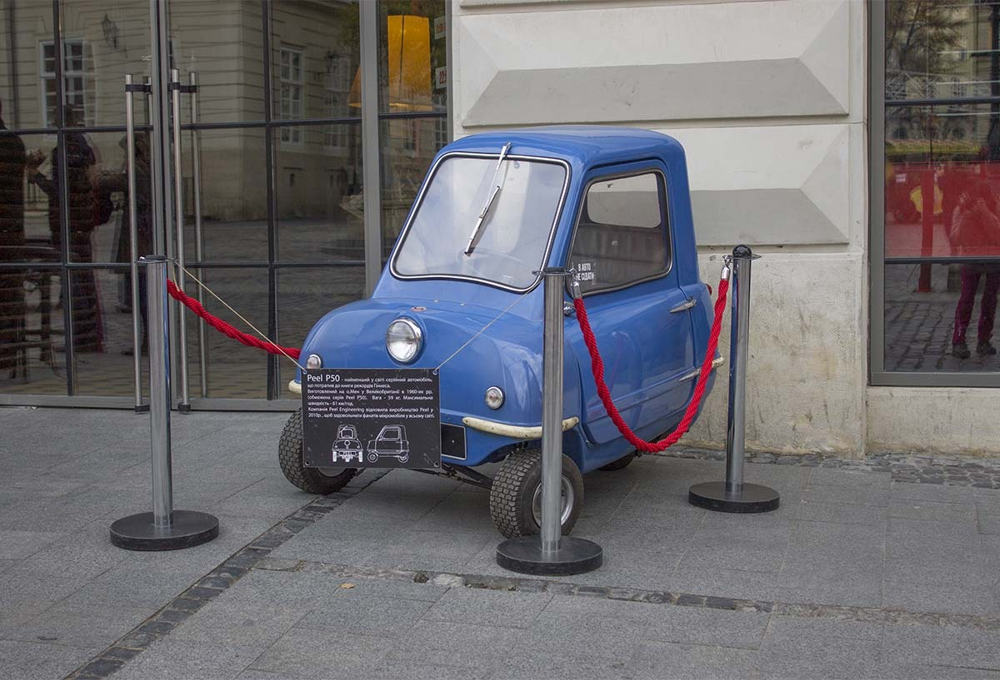

Otomobilin tarihi, 19. yüzyılda enerji kaynağı olarak buharın kullanılmasıyla başlar ve içten yanmalı motorlarda petrolün kullanılmasıyla devam eder. Günümüzde alternatif enerji kaynakları ile çalışan otomobillerin üretilmesi konusunda çalışmalar hız kazanmıştır. Otomobil, ortaya çıkışından itibaren gelişmiş ülkelerde insan ve yük taşımacılığı konusunda ana ulaşım aracı olarak kendini kabul ettirmiş ve otomotiv endüstrisi II. Dünya Savaşı'ndan sonra en etkili endüstri kollarından birisi olmuştur. Dünya üzerinde 1907 yılında 250.000 olan otomobil sayısı, 1914'te Ford Model T'nin ortaya çıkışıyla 500.000'e ulaşmış, II. Dünya Savaşı'ndan hemen önce bu sayı 50 milyonun üzerine çıkmıştır. Savaşın ardından geçen otuz yıl içindeyse otomobil sayısı altı katına çıkarak 1975 yılında 300 milyona ulaşmıştır. Dünya üzerinde yıllık otomobil üretimi 2007 yılında 70 milyonu geçmiştir. 20. yüzyılın sonları ve 21. yüzyılın başlarında önemli petrol krizleri ile karşılaşan otomobilin karşısında petrolün kaçınılmaz azalması, küresel ısınma ve endüstrinin genelinde uygulanan kirlilik yaratan gazların emisyonları üzerindeki kısıtlamalar gibi sorunlar bulunmaktadır. Bunların üzerine 2007 - 2009 yılları arasında yaşanan ve otomobil endüstrisini derinden etkileyen küresel finans krizi de eklenmiş, bu kriz önemli küresel otomotiv gruplarına ciddi zorluklar yaşatmıştır.
| Anasayfa | 1 | 2 | 3 | 4 | 5 | 6 | 7 | 8 | 9 | 10 | 11 | 12 | 13 | 14 | 15 | 16 | 17 | 18 | 19 | 20 |